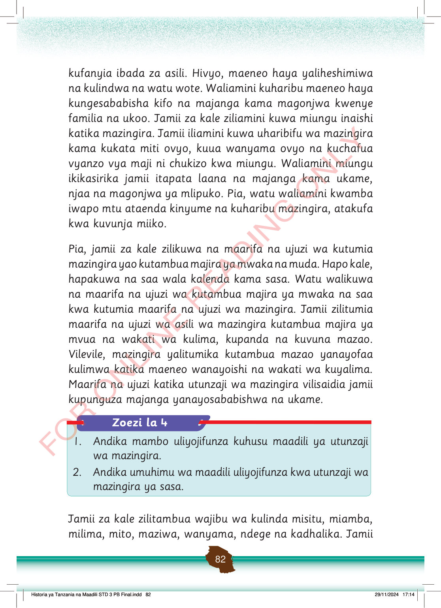

kufanyia ibada za asili.
Hivyo, maeneo haya yaliheshimiwa na kulindwa na watu wote.
Waliamini kuharibu maeneo haya kungesababisha kifo na majanga kama magonjwa kwenye familia na ukoo.
Jamii za kale ziliamini kuwa miungu inaishi katika mazingira.
Jamii iliamini kuwa uharibifu wa mazingira kama kukata miti ovyo, kuua wanyama ovyo na kuchafua vyanzo vya maji ni chukizo kwa miungu.
Waliamini miungu ikikasirika jamii itapata laana na majanga kama ukame, njaa na magonjwa ya mlipuko.
Pia, watu waliamini kwamba iwapo mtu ataenda kinyume na kuharibu mazingira, atakufa kwa kuvunja miiko.
Pia, jamii za kale zilikuwa na maarifa na ujuzi wa kutumia mazingira yao kutambua majira ya mwaka na muda.
Hapo kale, hapakuwa na saa wala kalenda kama sasa.
Watu walikuwa na maarifa na ujuzi wa kutambua majira ya mwaka na saa kwa kutumia maarifa na ujuzi wa mazingira.
Jamii zilitumia maarifa na ujuzi wa asili wa mazingira kutambua majira ya mvua na wakati wa kulima, kupanda na kuvuna mazao.
Vilevile, mazingira yalitumika kutambua mazao yanayofaa kulimwa katika maeneo wanayoishi na wakati wa kuyalima.
Maarifa na ujuzi katika utunzaji wa mazingira vilisaidia jamii kupunguza majanga yanayosababishwa na ukame.
Jamii za kale zilitambua wajibu wa kulinda misitu, miamba, milima, mito, maziwa, wanyama, ndege na kadhalika.
Jamii
Historia ya Tanzania na Maadili STD 3 PB Final.indd 82
29/11/2024 17:14
Zoezi la 4
1.
Andika mambo uliyojifunza kuhusu maadili ya utunzaji wa mazingira.
2.
Andika umuhimu wa maadili uliyojifunza kwa utunzaji wa mazingira ya sasa.